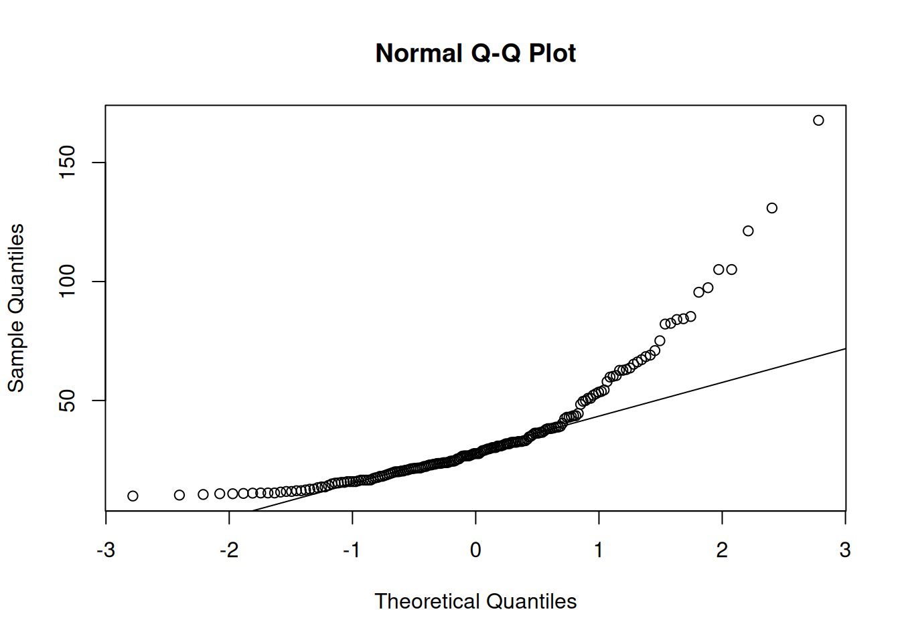

12 Diagnostic plots to assess Normality
12.1 Histograms
Last week you used ggplot() from the tidyverse to make a histogram to assess the Normality of the penguin data.
You can look at a histogram and see if your data generally look like one symmetrical hump, or asymmetrically skewed to one side, or some other pattern (e.g. two humps - like our total area calculations).
This week we’re going to use a more simple function from base R - hist() - to make a histogram of the tree diameter data.
The figures that hist() makes aren’t as attractive as ggplot() figures but are fine your own preliminary data exploration.
Use the hist() function on the tree diameter data.
hist(mydf$mycol)12.2 Boxplots
Box and whiskers plots, often shortened to boxplots, are another common way to visualise data during the initial exploration phase and assess Normality.
You made some using ggplot() and the iris data in week 1, but we didn’t talk about what boxplots show in detail.
Boxplots show:
- A box encompassing the interquartile range (IQR), the values between the 1st and 3rd quartiles, i.e. the 25th and 75th percentiles, q25 and q75 respectively.
- A line across the centre of the box at the median
- “Whiskers” on each end representing the 5th and 95th percentiles.
- Outliers (extreme values) plotted as individual points. Specifically, outliers are identified as any points outside the whiskers with values:
- \(<q25−1.5\times\mathrm{IQR}\) or
- \(>q75+1.5\times\mathrm{IQR}\)
Just like with the histogram, this week we’re going to use a more simple function from base R - boxplot() - that is simpler but not as attractive.
Use the boxplot() function on the tree diameter data.
boxplot(mydf$mycol)12.3 Normal Quantile-Quantile (Q-Q) plots
There is one other plot that is particularly useful for assessing Normality: a Normal quantile-quantile or Q-Q plot.
The Normal Q-Q plots are generated as follows:
- The data set is divided into quantiles - sections of data with equal densities of the data points, ranked from lowest to highest.
- The observed quantiles in your data are plotted (on the y-axis) against the predicted quantile for a Normally-distributed data set (on the x-axis).
- A line is drawn through the first and third quantiles (the 25% and 75% values of the data.)
You can interpret the Q-Q plot as follows:
- If your data are Normally-distributed, the points will all lie on the straight line plotted on the graph.
- An S-shaped curve indicates that the distribution has heavier or lighter tails than expected.
- A curve bending upward indicates that the distribution is positively/right-skewed.
- A curve bending downward indicates that hte distribution is negatively/left-skewed.
In R, you make a Q-Q plot with the two functions below (the first one plots the points and axes, the second one plots the line):
qqnorm(mydf$mycol)qqline(mydf$mycol)
Make a Q-Q plot of the tree diameter data.

Q:
What does the Q-Q plot tell us about the tree diameter data?
Does it agree with the histogram and boxplot?
12.4 Combining multiple base R plots
It would be really nice if we could combine all our plots into one larger plot, so we could see all of them at the same time.
In base R, the easiest way to do this is with the following command:
par(mfrow = c(1,2))The vector given to the mfrow argument tells R the number of rows and columns that you want in your final figure, respectively.
Use the following template to make a figure with all three diagnostic plots.
# Make diagnostic plots for Normality
# - a histogram a boxplot, and Q-Q plot with a line
par(mfrow = c(1,3)) # 3 panels in 1 row
hist(mydf$mycol)
boxplot(mydf$mycol)
qqnorm(mydf$mycol)
qqline(mydf$mycol)